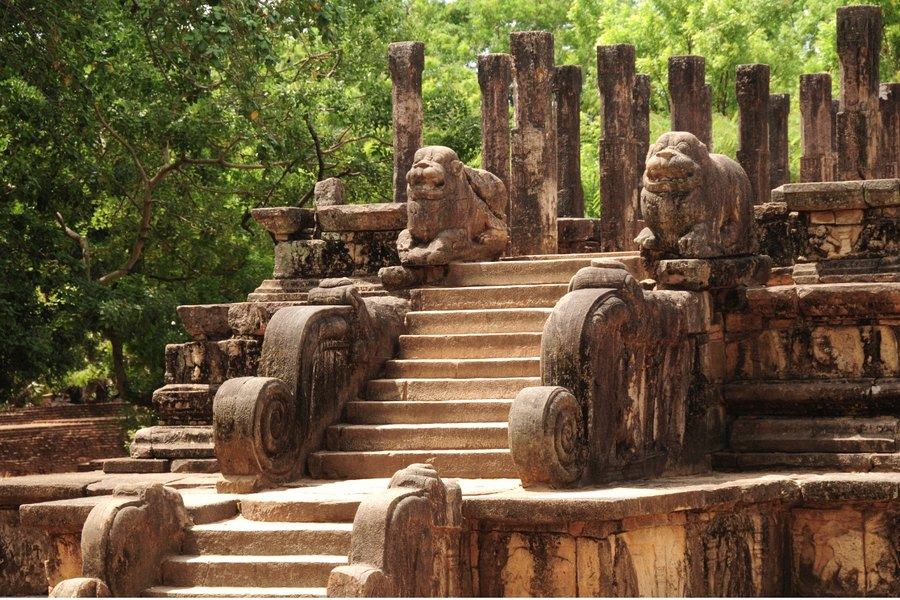
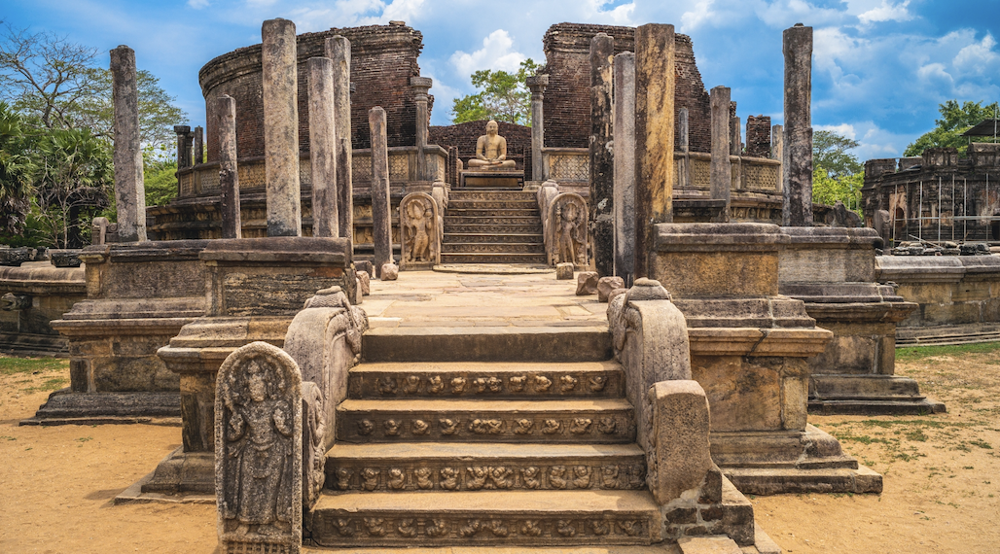

Sri Lanka's real depth is in the layers beneath the surface — in the stories behind the stones, in the living traditions that have survived two and a half millennia of empire and occupation, in the village kitchens and ancient tank systems and forest monasteries that exist entirely outside the tourist trail. This is not the island that appears in most itineraries. This is the one that remains after you think you already know it.
At Destinova, we call it the deep side. And once you have seen it, the surface view is never quite enough.
Anuradhapura — A Living Sacred City
Anuradhapura is one of the oldest continuously inhabited cities on earth. Founded in the 4th century BC, it served as Sri Lanka's first capital for over a thousand years — and the monuments left behind by the rulers who shaped it are staggering in scale, ambition, and survival.
Most visitors pass through in a few hours, photograph the main stupas, and leave. This is understandable. It is also a mistake.


Anuradhapura · The ancient capital that has never stopped being inhabited
The Sri Maha Bodhi
In a walled enclosure in the heart of Anuradhapura stands a tree. Not a famous tree in the way of a landmark — but a living tree, continuously tended and venerated since 288 BC, when a cutting was brought from Bodh Gaya in India, where the Buddha is believed to have attained enlightenment beneath its parent. The Sri Maha Bodhi is the oldest known living human-planted tree in the world.
To sit beneath it in the early morning, when the white-clad pilgrims bring flowers and the monks perform their rituals and the bells sound through the warm air, is to feel the full weight of two and a half thousand years of unbroken faith. This is not history. It is not heritage. It is alive.
The Ruwanwelisaya Stupa
The great white dome of the Ruwanwelisaya — built in the 2nd century BC, restored and repaired through every subsequent century — is one of the most physically impressive monuments in Asia. At 103 metres in height, it was one of the tallest structures in the ancient world at its completion.
Walking the elephant wall that runs around the entire circumference — hundreds of identical figures carved from stone, each one subtly different if you look closely enough — slowly, in the late afternoon when the shadows grow long, is one of those experiences that requires no interpretation. It simply lands.
"Anuradhapura does not ask to be understood. It asks to be experienced — slowly, repeatedly, with the kind of attention that lets its scale gradually become real."
Polonnaruwa — Ruins That Breathe
If Anuradhapura is ancient and solemn, Polonnaruwa — Sri Lanka's medieval capital, abandoned in the 13th century — is more intimate and accessible. The ruins are human-scale. The gardens between the monuments are shaded and cool. You can cycle from site to site in an hour, or spend a full day moving between them on foot.


Polonnaruwa · Sri Lanka's medieval capital · Human-scale ruins in a garden setting
The Gal Vihara
Nothing in Polonnaruwa — perhaps nothing in Sri Lanka — prepares you for the Gal Vihara. Four enormous figures, carved directly from a single face of granite: a seated Buddha deep in meditation, a standing Buddha fourteen metres tall, a reclining Buddha fifteen metres long, and a smaller seated figure in a cave shrine. All carved in the 12th century. All of such technical mastery and serene expression that they have been called the greatest achievement of Sri Lankan art.
There is a moment when you first see the reclining figure — when the scale registers and then the expression registers, the absolute peace in the carved stone face — that is difficult to describe without sounding either sentimental or inadequate. Both probably apply. Go anyway.
Hire bicycles and arrive at Polonnaruwa before 7:30am. The gardens are cool, the light is golden, and you will have the Gal Vihara almost entirely to yourself for the first hour. A private archaeologist guide transforms the experience — the stories behind the stone are as extraordinary as the stone itself.
Sigiriya — Beyond the Photographs
Sigiriya is, by reputation, Sri Lanka's most visited site. By reputation, it is a fortress on a rock. Both are true, and both are insufficient.
The full story of Sigiriya begins with a king named Kashyapa, who seized the throne from his father by immuring him alive, then spent the rest of his reign building a palace in the sky — presumably calculating that his brother, the legitimate heir, would have difficulty attacking him at 200 metres elevation. He was wrong. The palace was abandoned when Kashyapa fell in battle, and what remained was slowly swallowed by jungle for fourteen centuries.


Sigiriya · The 5th-century frescoes · The stairways that climb toward the sky palace
The Frescoes
Halfway up the western face of the rock, in a sheltered gallery that has protected them through fifteen centuries of Sri Lankan weather, are the frescoes. Between 500 and 2,000 figures were painted here originally — only eighteen survive intact. They depict heavenly maidens, or perhaps court women, or perhaps the king's consorts — the scholarly argument continues. What is not arguable is the quality: the delicacy of the line, the luminosity of the pigment, the expression in the painted eyes that is somehow still present across fifteen hundred years.
The Water Gardens
At the base of the rock — largely missed by visitors in a hurry to climb — are the water gardens. Built in the 5th century, they are among the oldest landscaped pleasure gardens in Asia: symmetrical pools, fountains powered by hydraulic pressure from the moat, boulder gardens with carved bathing pools, a system of seasonal fountains that still function when it rains.
Arriving early and beginning in the gardens, before the climb, before the heat rises, gives you Sigiriya in the right sequence. The gardens are where the king spent his mornings. They are where the scale of the project — not just a fortress but a statement, a vision of paradise engineered into stone — first becomes legible.
"Sigiriya is not a fortress. It is a worldview made physical — the belief, held by a king who knew he was running out of time, that beauty and power could be made permanent."
Beyond the UNESCO Sites

Dambulla Cave Temple · In continuous use as a place of worship since the 1st century BC
Dambulla Cave Temple
Five cave temples at Dambulla, filled with 153 Buddha statues and covering 2,100 square metres of painted ceilings and walls, have been in continuous use as a place of worship since the 1st century BC. The paintings have been restored and repainted across the centuries — not once, not as a preservation project, but continuously, as a living act of faith.
Coming here in the early morning, when the pilgrims arrive with flowers and the incense smoke rises through the cave openings and the air smells of jasmine and old stone, you understand something that no site visit can teach: this is not a heritage attraction. It is a temple. And it has always been a temple.
Village Sri Lanka
Between the great monuments of the Cultural Triangle are the villages that have existed in their shadow for two thousand years. Villages where the tank-fed paddy fields follow the same boundaries they had in the time of the ancient kings. Where bullock carts still move along dirt tracks in the late afternoon. Where the kovil ceremonies and the pirit chanting and the lunar calendar celebrations continue as they always have.
Destinova builds village encounters into its Cultural Triangle itineraries not as add-ons but as integral experiences. A morning in a traditional village — watching the tank fishermen cast their nets, visiting the local potters at their wheels, sharing a meal cooked over a wood fire — offers a depth of cultural understanding that no number of monument visits can provide.
The Forest Monasteries
Hidden in the forests surrounding the ancient capitals are monasteries that were old when the medieval kingdoms were young. Some are still occupied by forest-dwelling monks following the most ascetic of Theravada Buddhist traditions — meditating in caves, living on alms, maintaining a practice of solitude so complete that many have never left the forest perimeter in decades.
Where access is possible and permission is granted, these encounters with living monastic tradition are among the most affecting experiences Sri Lanka offers. They require time, relationship, and the right introduction. They are not in any guidebook. They are part of what Destinova means by the deep side.
How to Experience It


The deep side unfolds slowly · It rewards the unhurried traveller
The deep side of Sri Lanka requires more than an itinerary. It requires a guide who grew up in this country, who has spent years building the relationships that open the right doors — into monastery gardens, into temple rituals, into private archaeological collections, into the kitchens of families who rarely receive outside guests.
It requires time. Rushing the Cultural Triangle in a day and a half misses almost everything. Three or four days, based within or near the sites, allows the kind of repeated and early-morning visits that reveal the real character of these places.
It requires intention. The deep side of Sri Lanka does not advertise itself. It waits for travellers who are curious enough, unhurried enough, and well-guided enough to find it.
That is what Destinova designs. Not a tour of landmarks — but a genuine encounter with a civilisation that, on a small island in the Indian Ocean, built one of the great cultures in human history, and whose descendants are still here, still practising, still tending the trees and the temples and the tanks. Come and find it.